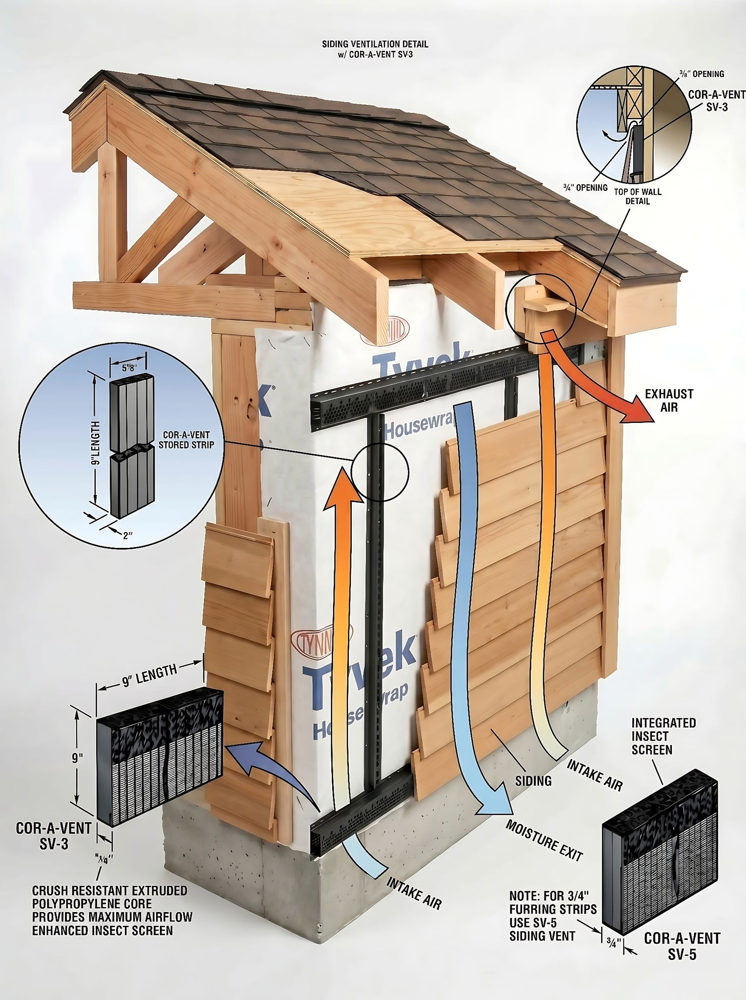
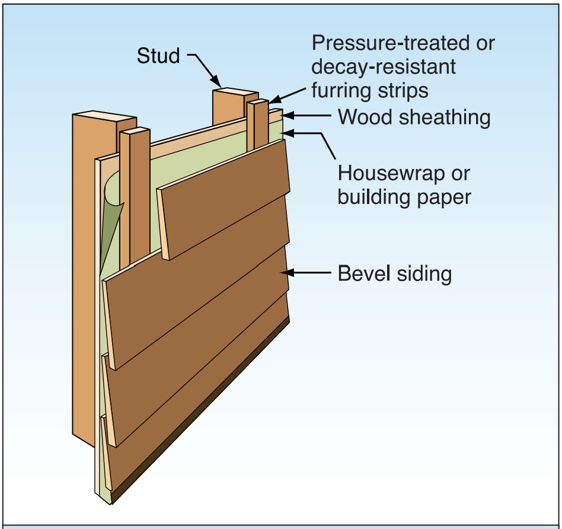

Sections + Details · Carport→Garage Conversion · Not to scale
Layer Schedule
Interior → exterior · ✓ = you already have it
½" gypsum + latex paint = Class III vapor retarder (allowed because the cladding is vented). Never add poly sheet here. Leave open if unconditioned.
2×4 @ 16" o.c., PT bottom plate, anchored. Sheathing/nailing per permit — enclosing the carport changes lateral bracing.
R-15 Rockwool ComfortBatt, unfaced. Vapor-open; dries both ways — ideal for a marine wall.
15/32" APA-rated plywood. ⅛" gap at panel edges/ends; nailing per shear/braced-wall spec on your permit set.
Tyvek HomeWrap + tape, cap staples. Openings get FlexWrap NF (sills) + StraightFlash (jambs/head) — see Detail 2.
Vertical ¾" furring @ 16" o.c. over studs — 1×4 PT or ripped CDX plywood. This is only the spacer that creates the gap (drainage + drying). A gap by itself is a drained rainscreen — #7 is what makes it vented.
Cor-A-Vent SV-3 + insect screen at top & bottom of the wall and around openings. This is what turns the gap into a vented rainscreen — air in low, out high, bugs out. Furring (#6) makes the gap; this opens & screens it. See Section A.
V-groove thermo-modified wood. Back-prime/oil cut ends; finish with a penetrating UV oil if you want to hold the color (else it silvers).
304 / 316 stainless ring-shank siding nails — stops tannin staining & corrosion. Length must bite ≥1" into studs through the gap.
Section A — Typical Exterior Wall
Isometric cutaway · interior → exterior · stepped layers · airflow + drainage shown · NTS


Section B — Street-Side Stone Wainscot
Vertical cut · slab to plate · stacked-stone veneer (lower 4'-6") → wood siding above · Street Side only
The Street Side carries a stacked-stone (ledgestone) wainscot on its lower 4'-6" — a mortar-set veneer that stands ≈6" proud of the 2×4 framing, then steps back to the vented wood siding (Section A) above. Because it's an adhered masonry veneer on a wood-framed wall, it gets the full water-managed back-up: two layers of WRB (the inner one a sacrificial bond break), a drainage gap + weep screed at the base, corrosion-resistant lath + scratch coat, then the stone. The cap / transition flashing at the 4'-6" line sheds the stone top and the siding's base vent drains over it — keep the two systems' flashings shingle-lapped so water always exits outward.
Stone Wainscot Schedule — Street Side
Lower 4'-6" of the Street-Side wall only · adhered/mortar-set stacked stone over the framed wall (S1 → S5, inside → out)
Behind adhered stone, run two layers of WRB over the sheathing — the inner layer is a sacrificial bond break so a mortar bond can't bridge moisture to the wall. Lap over the Section-A Tyvek at the 4'-6" transition.
Code now requires a drained adhered-veneer back-up: a ≥3⁄16" drainage mat behind the lath plus a weep screed at the base so water exits over the slab edge. IRC R703.7.
Self-furring galvanized or stainless lath, fastened through the WRB into studs (not just sheathing) with corrosion-resistant fasteners. Stainless near the marine coast.
Type S (or N) polymer-modified mortar — scratch coat over the lath, cure, then the setting bed. Back-butter each stone. Keep mortar off the weep screed's drainage path.
White stacked-stone / ledgestone, ≈6" deep, set in the bed and stands proud of the framing. Seal the cut top course at the cap-flashing transition; do not point the weeps shut.
Metal cap over the stone top, tucked behind the upper WRB and sloped to drain. The siding's SV-3 base vent lands above it — shingle-lap so the stone and siding water-management stay continuous.
How the rainscreen breathes & drains
Air enters low, exits high — constant drying behind the cladding. Water that gets past the siding hits the Tyvek and drains out over the base flashing. Run the vent strip above & below every opening.
Shingle-lapped order · sill → jambs → head
Golden rule: each upper layer laps over the one below so water always sheds outward and down. The sill is never sealed — it must drain. Tyvek tape seals flat seams only; openings get butyl flashing.
Enclosing a carport adds shear walls. Confirm sheathing, nailing & hold-downs with the permit set or an engineer before closing walls.
In Marine 4, code wants ≥ Class II interior — but vented cladding lets you use Class III (latex paint). Never add interior poly. Confirm with your inspector.
Any wall/ceiling shared with living space needs gypsum on the garage side (½", or ⅝" Type X under living space) — separate from this exterior detail.
Only the lower 4'-6" of the Street Side is stone (Section B); siding above. Adhered veneer is heavy — confirm it bears on the slab/foundation, not on framing, and detail a drained back-up per IRC R703.7.